попутно
Машины уже едут. Инфраструктуру проверяем попутно.
Мониторинг шкафов и щитов МГТС по фото, дальше с камер служебных машин
Бригада проезжает 20–100 км за выезд, а шкафы на опорах проверяют глазами
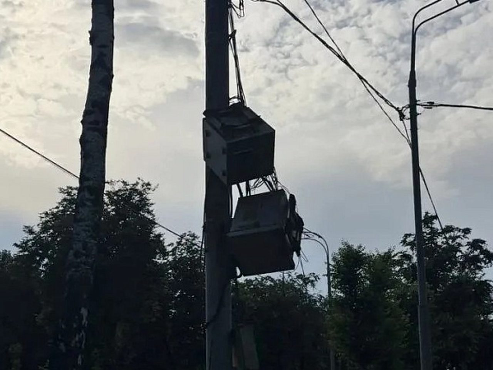
Нарушение крепления · 0.93Вручную отслеживать состояние всей инфраструктуры по маршруту невозможно.Нужен перечень: какой объект, что с ним, что делать.
Организаторы дали 62 фото: два типа объектов и четыре класса состояния
плюс 1 без разметки. Снимала бригада с руки, крупным планом
тип объекта указан только в имени папки
ID берём из имени файла: тип и номер, например ТКШ-36955095
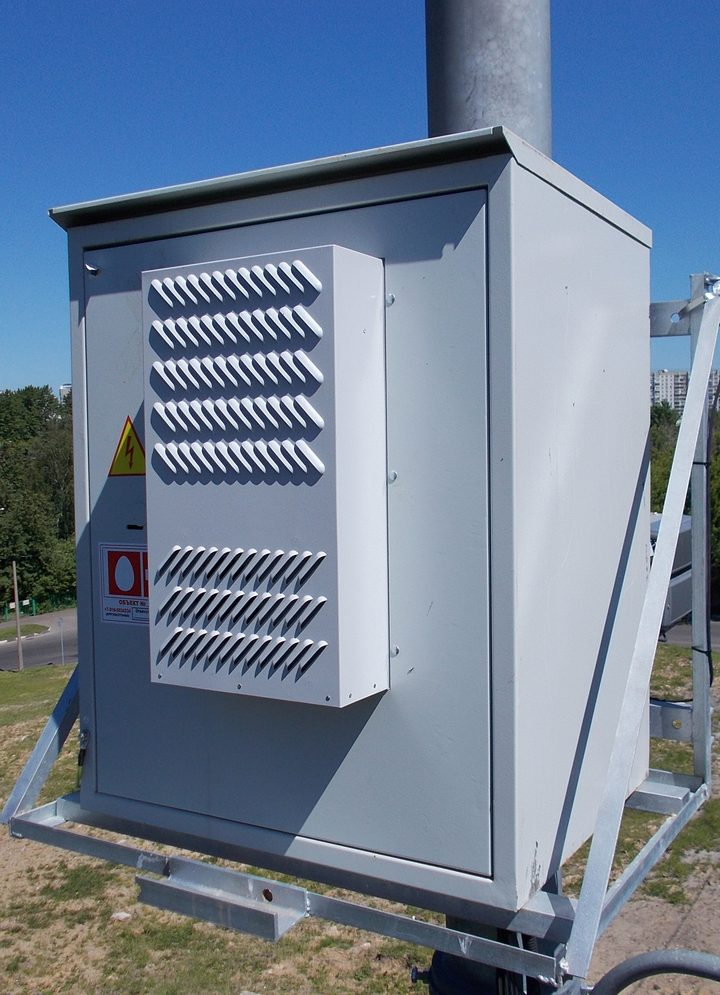
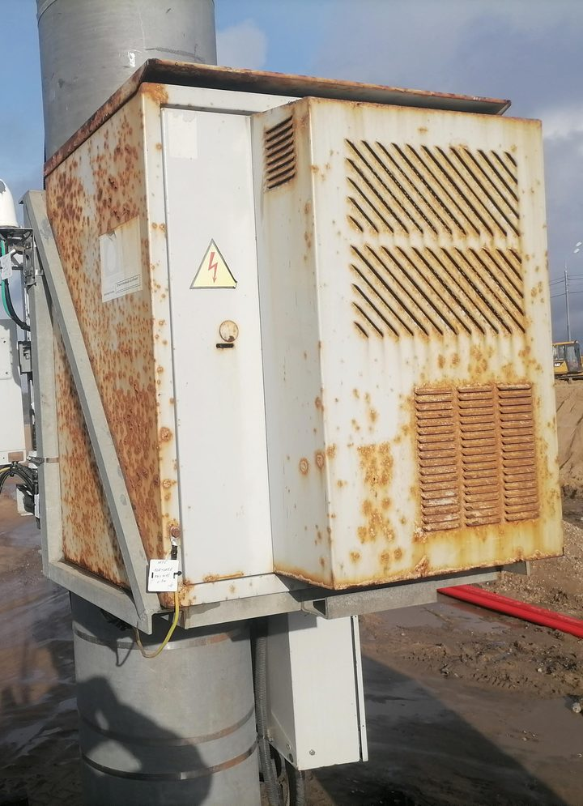
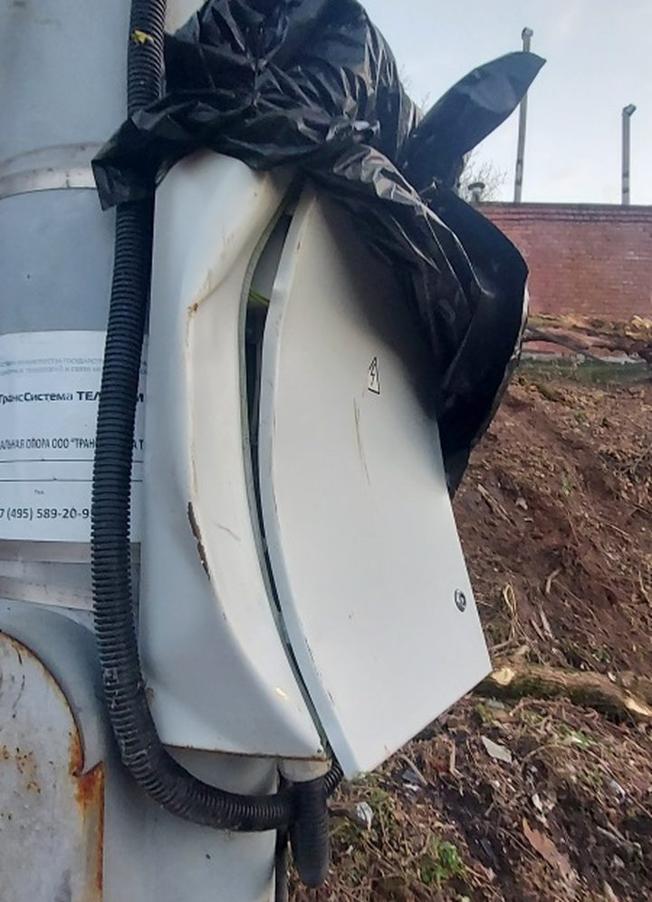
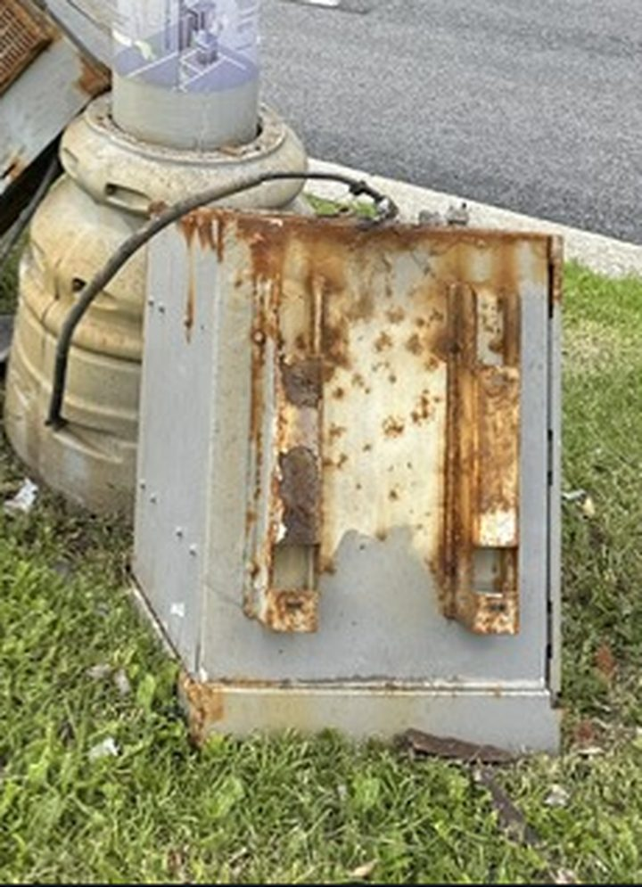
Каждое фото получает вердикт, человек смотрит только спорное и опасное
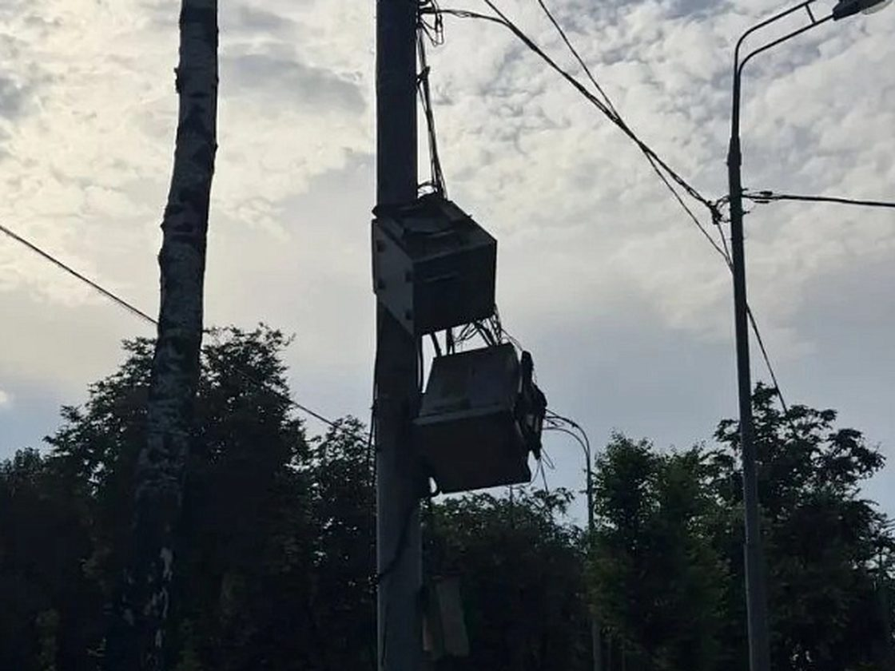
Нарушение крепления · 0.93вероятность на ответ
Тревога
опасно: в обход очереди, сразу в наряд
На проверку
дефект или неуверенная норма: диспетчеру
Норма
модель уверена: закрыто без человека
Объект не найден
нечего оценивать: переснять кадр
Фото доходит до вердикта за 2 секунды, история объекта копится в Kafka
API
Rust · axum
проверка файла и роли, ответ клиенту сразу
S3
сам файл фото
Kafka
событие «новый кадр» со ссылкой, журнал истории объекта
ML-воркер
Gemini Decision: 5 вопросов о фото, вероятность на каждый ответ, правило маршрута
Реестр и экраны · Postgres
очередь, реестр с рекомендацией, «Качество», выгрузка XLSX и CSV, мобильное приложение
Rust (axum) · Angular · Kafka (Redpanda) · Postgres · S3 · Kotlin Multiplatform · Swagger · роли и JWT
Модель отвечает на вопросы о фото, а не учится на 61 снимке
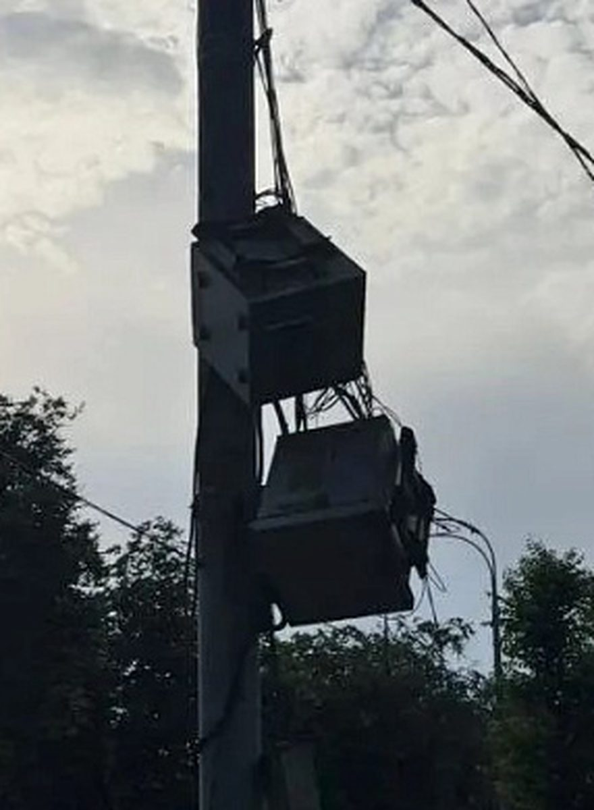
Нарушение крепления · 0.93Мало данных
61 фото и 4 примера крепления: свой детектор переобучится
Классы словами
новый вид повреждения добавляется строкой в taxonomy.json, без кода
Порог с запасом
норма закрывается сама при уверенности 0,6 и тишине проверок да или нет
Весь датасет прогнан: 41 из 41 дефектов дошли до человека
дефектов у человека, пропусков 0
macro-F1 0,883, на 61 фото с разметкой
и все верно: модель уверена в норме, проверки молчат
Порог автоподтверждения нормы
доля фото, закрытых без человека, и потерянные дефекты
Веб-интерфейс: от загрузки фото до выгрузки перечня
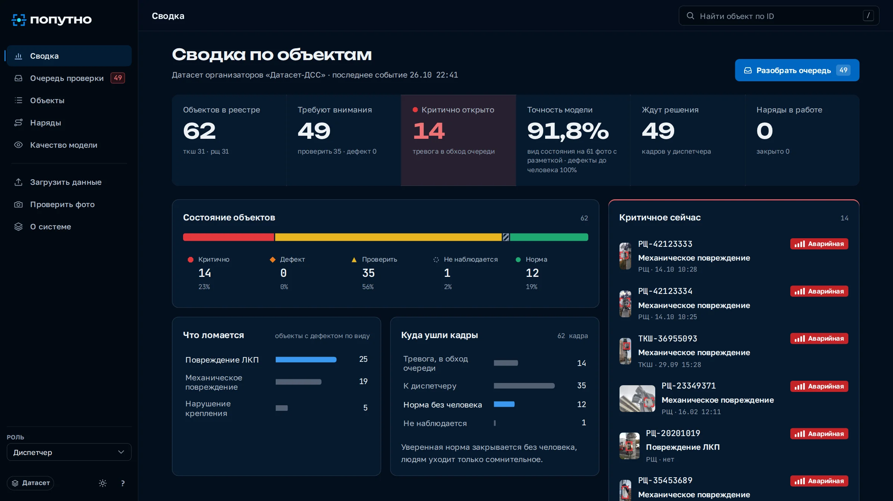
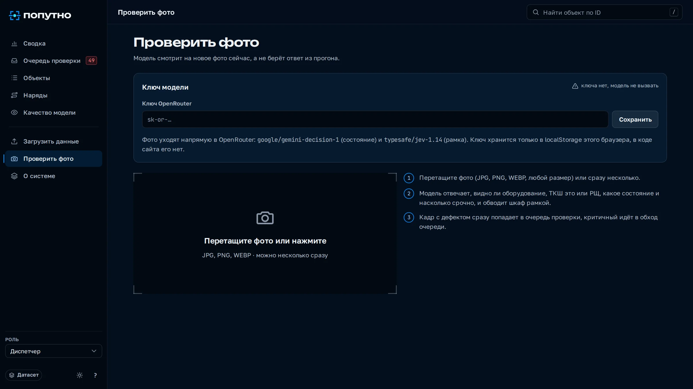
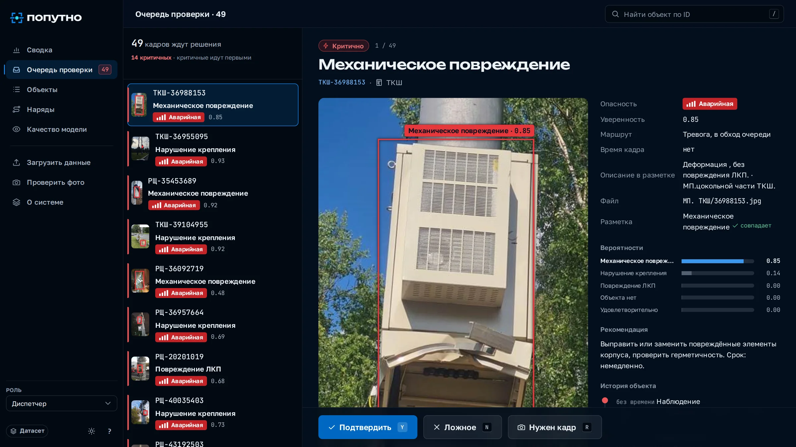
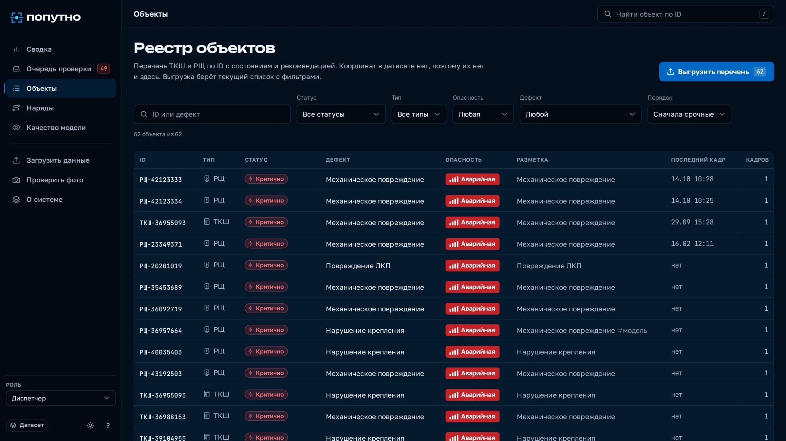
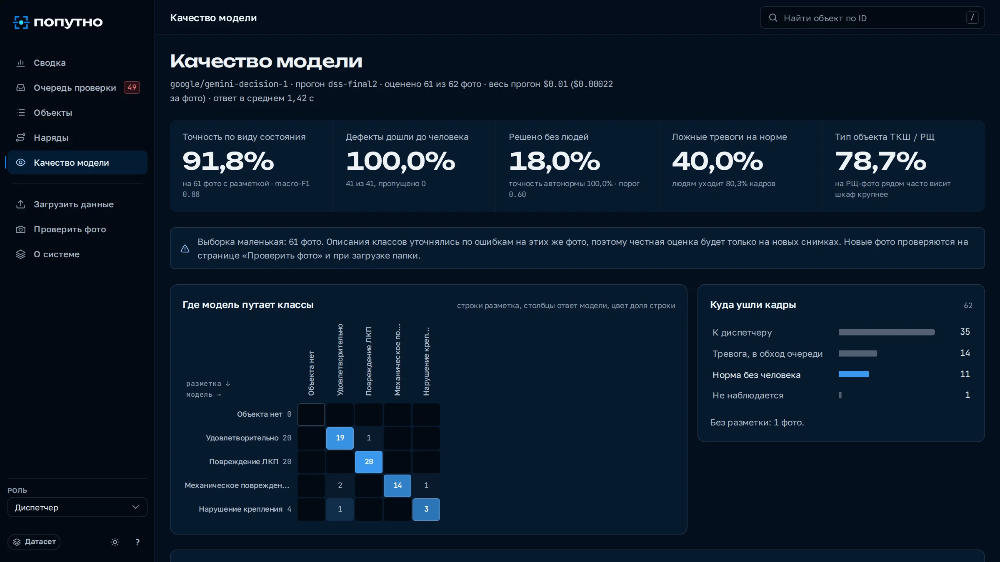
Стенд: den4ikai.github.io/poputno/site · Angular, роли и вход по JWT
Мобильное приложение: диспетчер и бригада в одном клиенте
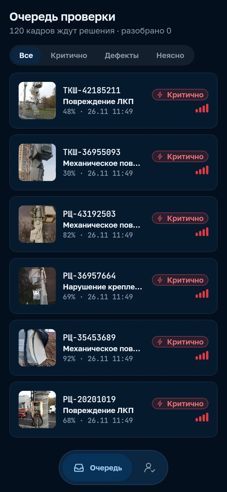
очереди
Очередь
свайп: дефект или норма
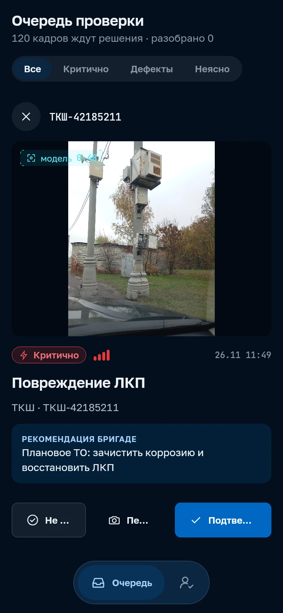
карточки
Карточка кадра
рекомендация бригаде и почему модель так решила
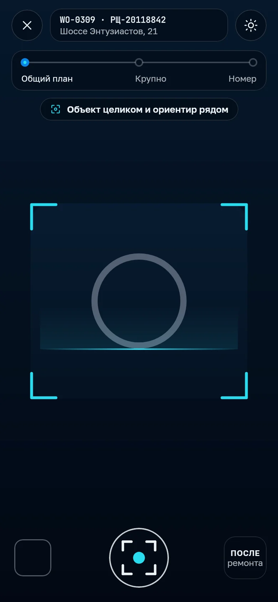
камеры
Камера бригады
до и после ремонта: общий план, крупно, номер
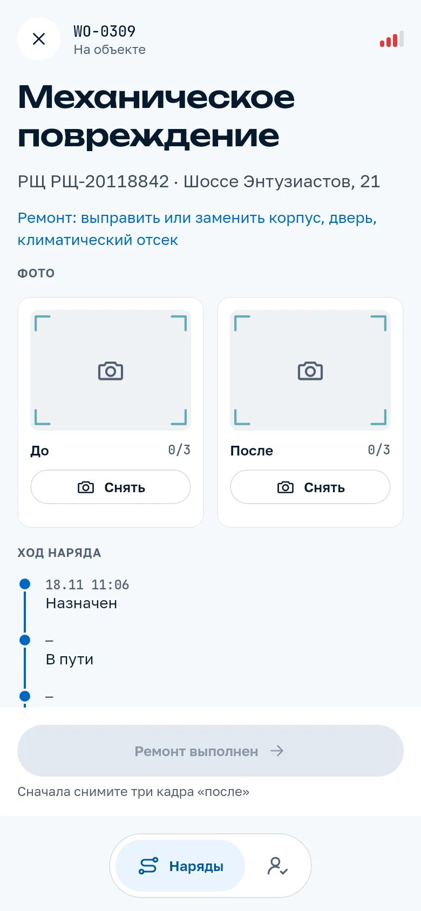
наряда
Наряд
от назначения до приёмки, без трёх кадров «после» не закрыть
Kotlin Multiplatform и Compose
Четыре роли
вход по ролям, тот же API и токены
Тот же бренд
токены, шрифты и иконки перенесены из брендбука, уголки рамки на фото и в прицеле камеры
Аналоги смотрят на дорогу с машин, мы на шкафы и щиты на опорах
| Решение | Что ищет | Откуда кадры | Шкафы и щиты | Новый вид дефекта | Цена |
|---|---|---|---|---|---|
| Ручной обходкак сейчас в МГТС | любые объекты, глазами бригады | осмотр на выезде, фотоотчёт | обновить чек-лист | время бригады | |
| VialyticsГермания | покрытие дорог, знаки, люки | смартфон на стекле служебной машины | модель вендора | н/д | |
| BlyncsyBentley, США | дорожные объекты, 40+ состояний | видеорегистраторы потока машин | модель вендора | от $8 за милю | |
| NtechLabпартнёр Ростеха | ямы, люки, ограждения | камеры общественного транспорта, пилот | модель вендора | н/д | |
| ДроныГеоскан и другие | опоры ЛЭП | отдельный вылет с оператором | зависит от ПО | вылет и оператор | |
| Попутномы | ТКШ и РЩ на опорах | фото бригады, дальше камера машины | строкой в taxonomy.json | ≈$0,00022 за фото |
Источники: vialytics.de/en/system · bentley.com/software/blyncsy · comnews.ru, 12.08.2025, NtechLab · pribor.ifmo.ru, дроны Геоскан для ЛЭП. Данные вендоров, нами не проверены; н/д: цена не опубликована. Готового решения именно для телеком-шкафов мы не нашли.
Камера на машине: тот же конвейер плюс GPS и история проездов
Фото
- фото бригады и датасет организаторов
- ID из имени файла
- перечень с вердиктом и выгрузка XLSX
Камера и GPS
- регистратор снимает по маршруту 20–100 км
- кадры в тот же S3 и топик Kafka
- поля «машина», «курс», «координаты» в событии уже есть
Объект во времени
- ближайший ТКШ или РЩ из реестра по координатам и курсу
- «повреждён» по голосованию нескольких проездов
- «не наблюдается», если объект закрыт
Итог поездки
- список адресов и координат, куда нужна бригада
- та же таблица XLSX и карта точек
- решения диспетчера копятся как разметка для своей модели
попутно
Готовы к вашим вопросам
Решение
[ДАННЫЕ] urls.solution_short
Код
[ДАННЫЕ] urls.code_short
Модель дважды спутала деформацию с нормой, ЛКП различает без ошибок
| разметка ↓ · модель → | Удовлетворительно | Повреждение ЛКП | Механическое повреждение | Нарушение крепления |
|---|---|---|---|---|
| Удовлетворительно | 19 | 1 | 0 | 0 |
| Повреждение ЛКП | 0 | 20 | 0 | 0 |
| Механическое повреждение | 2 | 0 | 14 | 1 |
| Нарушение крепления | 1 | 0 | 0 | 3 |
| Класс | Фото | Precision | Recall | F1 |
|---|---|---|---|---|
| Удовлетворительно | 20 | 0,86 | 0,95 | 0,91 |
| Повреждение ЛКП | 20 | 0,95 | 1,00 | 0,98 |
| Механическое повреждение | 17 | 1,00 | 0,82 | 0,90 |
| Нарушение крепления | 4 | 0,75 | 0,75 | 0,75 |
Строки: разметка ДСС, столбцы: ответ модели, прогон dss-final2, 61 фото. Главная цифра не точность, а дефекты у человека: ошибки «МП → норма» ушли диспетчеру, уверенность нормы ниже 0,6.
Все 5 ошибок модели, ни одна не закрыта без человека
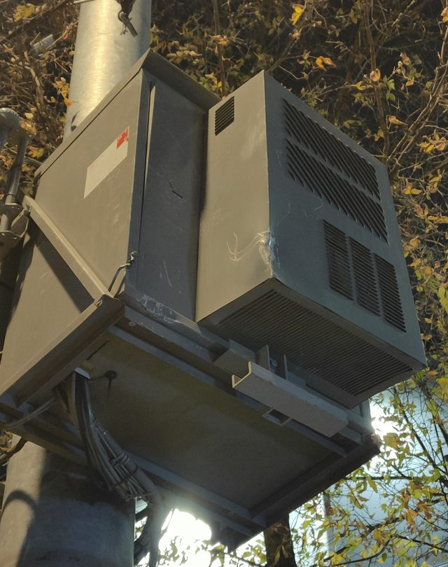
ТКШ-26224137
Разметка: Механическое повреждение
Модель: Удовлетворительно · 0.53
Маршрут: ушло диспетчеру
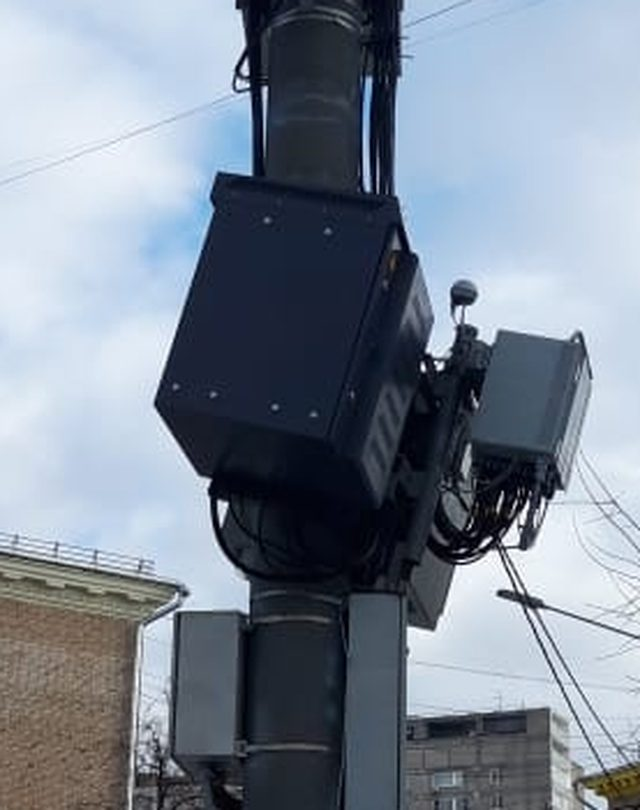
ТКШ-39104938
Разметка: Нарушение крепления
Модель: Удовлетворительно · 0.42
Маршрут: ушло диспетчеру
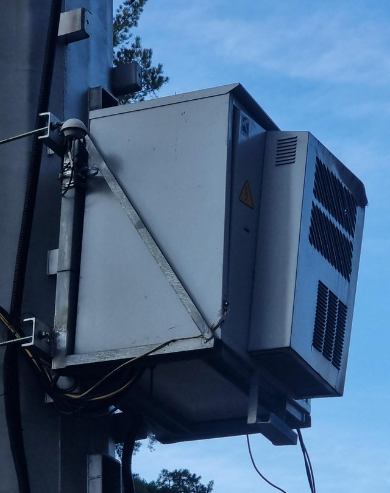
ТКШ-38060694
Разметка: Механическое повреждение
Модель: Удовлетворительно · 0.45
Маршрут: ушло диспетчеру
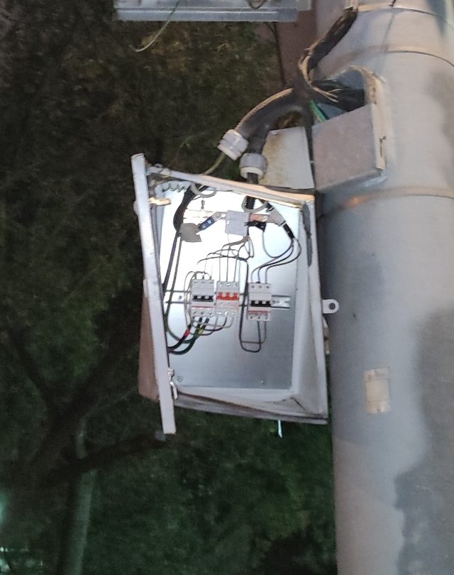
РЩ-36957664
Разметка: Механическое повреждение
Модель: Нарушение крепления · 0.69
Маршрут: тревога
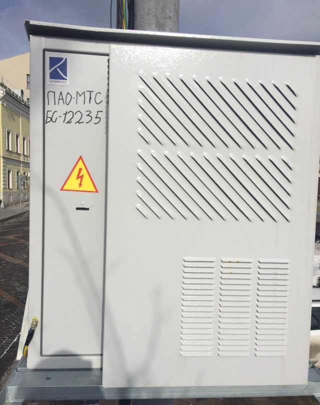
ТКШ-12021864
Разметка: Удовлетворительно
Модель: Повреждение ЛКП · 0.50
Маршрут: ушло диспетчеру
Показываем все ошибки, не выборку. Механическое повреждение, принятое за норму, ушло диспетчеру: уверенность нормы 0,45–0,53, ниже порога 0,6.
Пробовали шесть подходов, взяли самый точный: 91,8 % за $0,014
| Вариант | Точность | Цена датасета | Вывод |
|---|---|---|---|
| Gemini Decision, настроенный промпт, 2048 px | 91,8 % | $0,014 | взяли |
| Gemini Decision, первый промпт | 90,2 % | $0,011 | хуже находит перекос климатического отсека |
| Gemini 4 Neon, обычная чат-модель | 88,5 % | $1,05 | нет вероятностей, в 75 раз дороже; пишет описание, читает координаты с фото |
| Эталонные фото в запросе, few-shot | −4…−8 п.п. | ×5 | модель путает эталон с проверяемым фото |
| Обрезка по рамке перед классификацией | 85,2 % | без опоры в кадре не видно отрыва | |
| TypeSafe Jev 1.14 | 73,8 % | $0,013 | слабее как классификатор, годится для рамок |
Все варианты на тех же 61 фото, ml/experiment.py. Чат-модель почти так же точна, но не даёт вероятностей и в 75 раз дороже. Эталонные фото в запросе путают модель. Обрезка теряет опору, а без опоры не видно отрыва крепления.
Фото стоит $0,00022, весь датасет считается за 20 секунд
цена одного фото
ответ модели на фото
весь датасет через продукт: архив, S3, Kafka, модель
весь датасет, $0,014
Уходит в облако
только фото, длинная сторона 2048 px, через OpenRouter. Облачные VLM организаторы разрешили.
Остаётся у МГТС
Kafka, Postgres, S3, интерфейс и кэш ответов по хэшу фото. Повторный прогон и смена порогов ничего не стоят.
Требования постановки закрыты на стенде, камера машины в плане
| # | Требование постановки | Где показано | Статус |
|---|---|---|---|
| R1 | Прототип принимает фото и выдаёт анализ | «Проверить фото», ML-воркер, прогон датасета | стенд |
| R2 | Выявлять объекты инфраструктуры | вопрос «виден ли шкаф», тип ТКШ или РЩ, 79 % | частично |
| R3 | Признаки неудовлетворительного состояния | 4 класса, верно 91,8 % | стенд |
| R4 | Статус и рекомендация по каждому объекту | реестр, карточка, выгрузка XLSX и CSV | стенд |
| R5 | Перечень объектов для проверки или ремонта | очередь и реестр, ID из имени файла, координат в данных нет | стенд |
| R6 | Демонстрация на тестовых данных | прогон тестовых фото на защите | на защите |
| R7 | Архитектура и подход к компьютерному зрению | слайды «Пайплайн» и «Модель» | стенд |
| R8 | Масштабирование до камеры машины | слайд «Камера на машине» | план |
Выборка маленькая, поэтому честно: где у решения границы
описания классов правили по ошибкам на этих же фото. Честная оценка будет на тестовых фото защиты
тип ТКШ или РЩ верно: модель оценивает один главный объект, а на опоре часто висят оба
нормальных шкафов уходят людям: больше работы диспетчеру, но дефект не теряется
фото с координатами (EXIF и надпись на кадре), поэтому карта пока план, а не результат
Облако: без интернета работает только кэш уже виденных фото. Лица и номера пока не размываем.